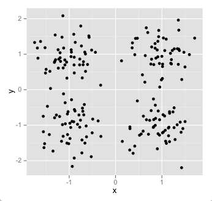
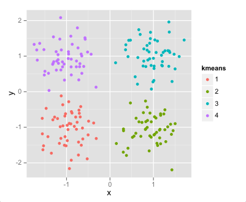
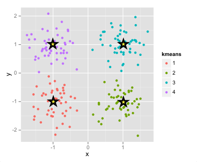
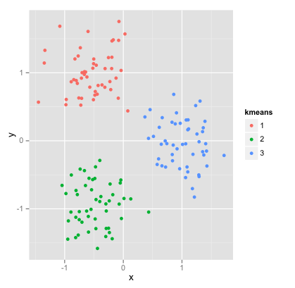
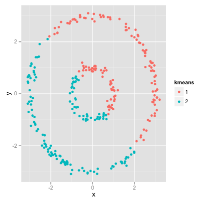
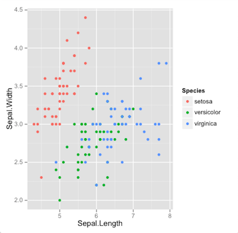
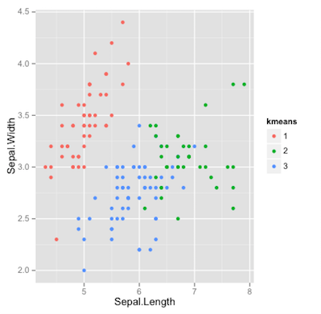

转载本文请先阅读关于本站中的版权说明。
K-means尝试将数据划分为K个有着同样方差的子集，同时最小化每个数据子集中的数据点到该子集中心点距离的平方和。K-means算法实现简单，性能高，聚类效果好，在很多领域都有所应用，不过K-means短发需要手工指定划分的类数，即K值。
和所有的聚类算法一样，K-means算法也是将个数据点分类到个互不相交的类中。我们将第个数据点记作，属于的类别记作。每一类之间应该有相似的特征，即在距离上很接近，因此一类点绘制在坐标系中看起来应该是聚成一团一团的。
对于每一类点，K-means会使用一个中心点来描述和代表这一类点。中心点一般被记作，按照我们手工指定的需要划分类的数目，一共会有个中心点，其中第类的中心点记作。下图中4个五角星就是4类的各自的中心点。
要注意中心点不一定是数据集中的点，而是数据集中某些点的重心点，因此他们都在同样的特征空间中。
K-means算法聚类的本质就是要使划分的类中数据点到该类中心点的距离和尽可能的小。
我们把这个值称为类间距（inertia），你也可以把组间距理解为各类间的紧凑程度，组间距越小，说明这一类中点越紧凑。K-means算法的目标就是要最小化类间距。
K-means的计算一般不会使用直接求解，因为我们有在性能和效果上都非常让人满意的近似迭代算法。
K-means的迭代计算利用了中心点和类的划分是可以互相定义的。
假设我们有了个中心点，我们可以给出一个类的划分，即对每个数据点，看它到个中心点中的哪个最近，就把分到这一类。
同样的，如果我们有了一个类的划分，我们也可以找出个中心点。这时第类的中心点被定义为所有属于类的数据点的均值点（物理上也可说是重心）。
K-means算法先随机选择个中心点，然后用这个中心点找出一个类的划分，然后又用这个类的划分来找出新的个中心点，然后又可以找到一个划分...随着这个中心点在迭代中趋向稳定，类的划分也就趋向稳定，算法终止。
K-means的这种迭代式改进搜索法又被称为Lloyd算法。
数学家已经证明了，这样迭代下去，中心点一定会收敛到一个稳定的值，而且在实际应用，收敛的速度往往还相当快，使得K-means成为了速度最快的聚类算法之一。
K-means算法的优势在于性能和聚类效果，同时它也存在一些局限。
第一个也是最主要的不足在于K-means是基于组间距的概念，这其中隐含了一个假设，即待聚类数据中每一类的应该是凸的，并且不同类的形状应该类似。而在实际应用中数据可能没有这些特征，这时K-means算法就不再适用了。
比如下面两个数据用K-means算法聚类，左图效果就非常好，因为它符合K-means对于数据的假设；而右图显然应该将内圈聚为一类，外圈聚为一类，K-means算法却依然强行尝试将数据聚类成各类形状相似的凸集。
K-means算法的第二个缺陷在于组间距并不是一个规范化的度量。组间距一般使用的是欧几里德距离，在非常高维的情况下，欧几里德距离会由于维度灾难而膨胀变得不再适用。不过这个缺陷可以使用降维算法比如PCA或者t-sne来缓解。
K-means的第三个缺陷就是它的收敛是到局部最优解而不是全局最优解，而且收敛的结果很大程度上取决于初始中心点的选择。这个缺陷也可以被选择多组初始值重复使用K-means算法计算后取最优来缓解。
这里我们还是使用著名的Iris数据集，由于K-means算法是如此常用，以至于R语言内置了kmeans函数。
kmeans函数第一个参数是数据集，可以是矩阵或者是数据集的形式；第二个参数是；第三个参数是迭代的最大次数；第四个参数是重复运行kmeans的次数；第五个参数是计算方法。通常只需要设置前两个参数，其它的使用默认值就可以了。
#R语言代码 ggplot2绘图 library(ggplot2) data(iris) cluster <- kmeans(iris[,-5], 3) iris$kmeans <- as.factor(cluster$cluster) fig <- ggplot(iris,aes(Sepal.Length, Sepal.Width)) + geom_point(aes(colour=kmeans)) print(fig)
下面左图Iris数据集在二维上的一个投影，右图是K-means聚类的结果，二者的吻合度是非常高的。
